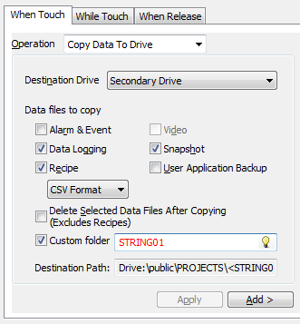

|
|
|
|
|
|
|
|
Use the dialog to set up Copy Data To Drive operations. This feature copies data generated during runtime from the main, secondary, or optional drive to a secondary or optional drive on a target machine.
The Editor passes the data location information, which is set in the Target Properties, to the Runtime. For iPCs, you must assign a specific hard drive letter for Copy Data To Drive operations in the Data Location property of the Target node. Otherwise, the Copy Data To Drive operation will not find the USB memory stick. For information on setting the source data location, see Appendix 5.11.1, Types of Data Locations.

The status of the copy operation is monitored by the system variable: _FileTransferStatus. For more information, see Section 6.7.1, System Variables: _FileTransferStatus.

Copy Data To Drive operations can only be used with switches and panel function keys.
You can only set Copy Data To Drive operations in the When Touch tab.
For XBTGC, HMISTO, HMISTU targets, only the Recipe and Delete Selected Data Files After Copying options are available for selection. The other options are not available, because those targets do not have a secondary drive.

Operation |
Description |
Destination Drive |
Select the drive you want to copy the data files to: Secondary Drive or Optional Drive. |
Alarm and Event |
Enable to copy alarms, events, alarm summary, and event summary log files. For more information on alarm and event files, see Section 16.3.6, Outputting Alarms and Events to a .CSV File. |
Data Logging |
Enable to copy data logging files. For more information on Data Logging files, see Section 13.1, About Data Logging. |
Recipe |
Enable to copy recipes. Then select the format you want to save the recipe files as: RCP or CSV (Unicode Common Recipe). For more information on recipes, see Section, 17.1, About Recipe. |
Video |
Enable to copy video files. For more information on video files, see Section 19.1.5.3, Video File Editor Operations. |
Snapshot |
Enable to copy snapshot files. For more information on snapshot files, see Section 19.1.11, Video Snapshot Control Variables. |
User Application Backup |
Enable to copy application backup files. |
Delete Selected Data Files After Copying |
Enable to delete the selected data files in the source location after copying. This is equivalent to a cut and paste operation. When disabled, the source files are copied over without being deleted.
|
Custom Folder |
Enable the check box, and enter a string variable with a string value that can be used as the custom folder name. It must be 1–39 characters long. For example, if you enter "STRING01", the destination
path will be:
|
Destination Path |
Displays the path where the data files are copied to. |

The switch becomes unavailable after a copy data to operation is initiated to show that the operation is in progress. Do not remove the USB drive or CF Card until the copy data to operation is completed. Removing the storage media during a copy data to operation may result in data loss or damage to the target or storage media. The switch returns to normal after the operation is completed.
When no USB drive or CF Card is inserted and a copy data to operation is initiated, an error message indicates that the storage cannot be found.
When the USB drive or CF Card is full and a copy data to operation is initiated, an error message indicates that the storage is full.